Class VI
4 Flowering and Fruiting Teacher, do all flowers produce fruits like this?
Have you noticed the children’s doubt? What is your opinion? Write in the Science Diary.
59

Class VI
4 Flowering and Fruiting Teacher, do all flowers produce fruits like this?
Have you noticed the children’s doubt? What is your opinion? Write in the Science Diary.
59
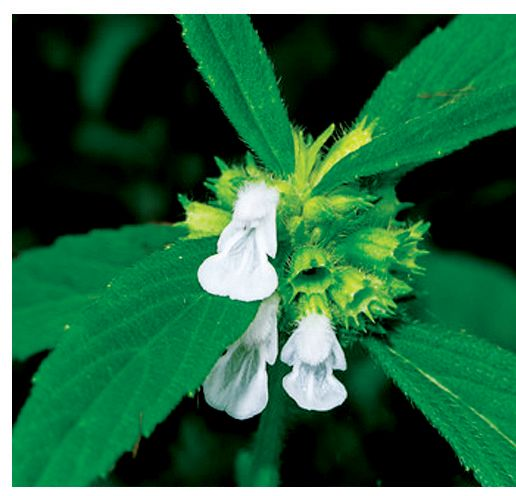

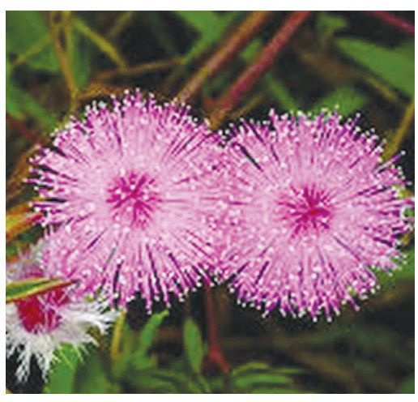
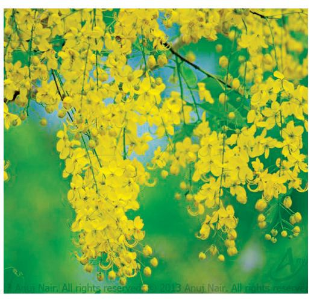
Basic Science
Some of the flowers seen around you are given in the picture below. Which of these flowers can you identify? Identify the flowers in the picture along with your friends and note them.
u
Mukkutti
u u u
You know that all flowers are not similar. In which ways are they different? Observe the flowers around you. Identify their diversity and complete the list. Name
Colour
Fragrance
Single flower/ Inflorescence
No. of Petals
Rose
Red
Have smell
Single flower
Many petals
You have noticed that the different flowers you observed differ in colour, smell and number of petals. Do flowers have only petals? Are there no other parts? Observe them. Are the parts the same in all the flowers you have observed?
Parts of flowers Let’s learn more about the parts of flowers. Observe a Shoe flower. Which all parts can you identify? Label those parts in the figure given below.
60
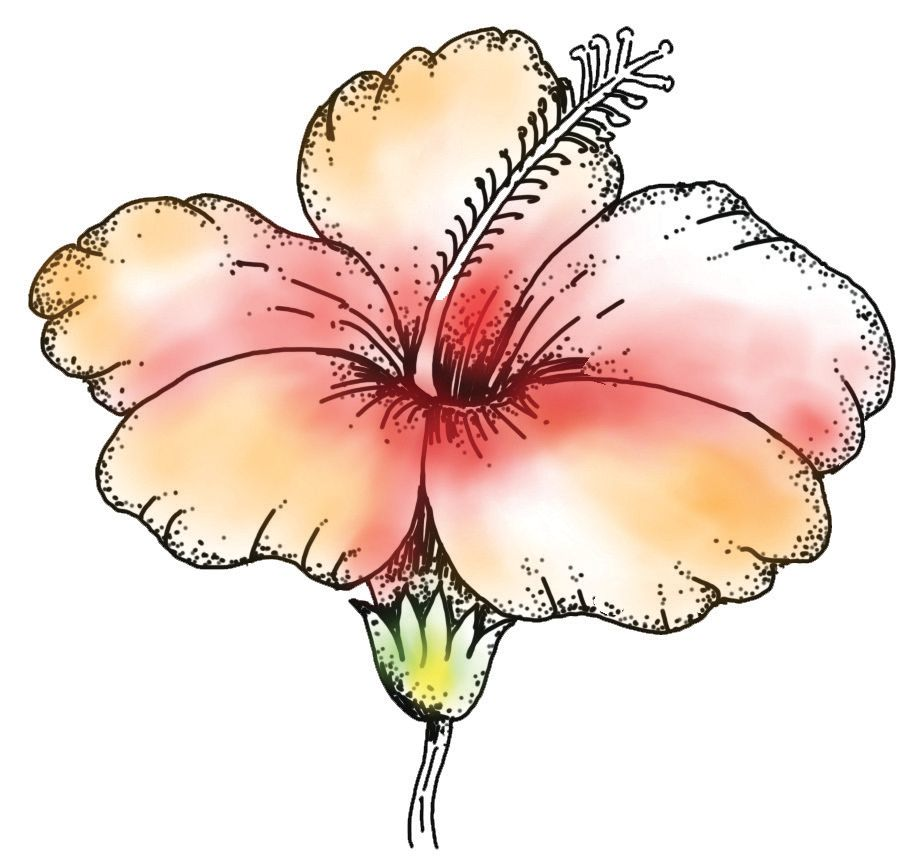

Class VI
.................................
Sepals
................................. Shoe Flower
The main parts of a flower are given in the table below. Analyze the table and make a note on the main parts of a flower and their functions. Present it in the class. Parts
Functions
Pedicel
Attaches the flower to the stem.
Thalamus
Provides the seat for other Gynoecium parts of the flower.
Calyx
Formed of sepals. Protects the flower bud by covering it.
Corolla
Formed of petals. Gives beauty and charm to the flower
Formed of stamens. Male Androecium reproductive part of the flower. Female reproductive part Gynoecium of the flower. Gynoecium consists of one or more carpels.
Androecium
Corolla
Calyx Thalamus
Pedicel
After analyzing the table, you have understood that all the parts of the flower have different functions. Copy the table on a chart paper and display it in the class.
Let’s Observe and Learn Let’s observe each part of the flower closely. What are the materials required?
61
Basic Science
Materials required: Different types of flowers, hand lens, forceps and a sheet of white paper. Observe each flower with a hand lens. Can you see all the parts given in the table? Carefully separate the parts of a flower you have observed and display it on a sheet of paper. Prepare a longitudinal section of gynoecium with the help of your teacher and observe it using a hand lens. Do you see the four parts, namely sepals, petals, androecium and gynoecium in the flower you displayed? Record the findings in the Science Diary.
Complete Flower Calyx, Corolla, Androecium and Gynoecium are the four main parts seen in a flower. A flower with all these four parts is a complete flower.
Let’s do a Project Are all flowers complete flowers? Observe the different types of flowers in your home and school. Record the observations in the table below. Flower Pedicel Thalamus Sepal
Petal
Androecium
Gynoecium
Analyze the list. What are your assumptions? Prepare a report and present it in the class.
Non-flowering Plants Do all plants flower? Are there non-flowering plants in your home and surroundings? Observe and find out. Don’t you know that there are flowering plants as well as non flowering plants in the plant world? Observe the picture and understand which are the non flowering plants.
62

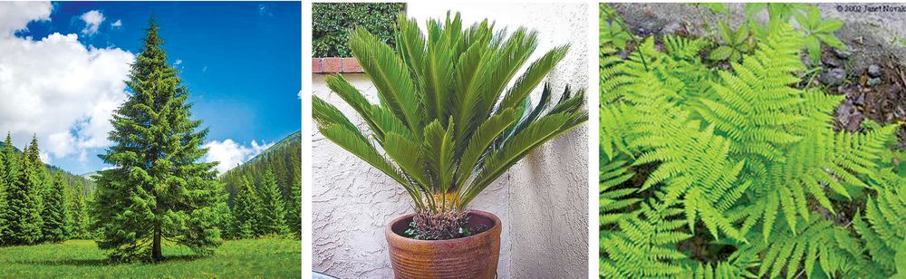
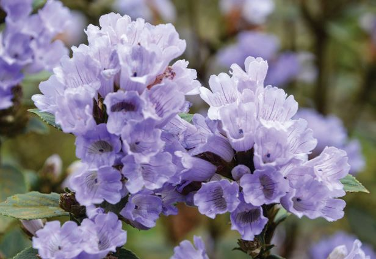

Class VI
Cycas
Pine
Ferns
Apart from these, small plants like algae also do not flower. Visit your school garden and find out which plants are non-flowering and record it. For Further Reading
Neelakkurinji (Strobilanthes kunthiana) Neelakkurinji is a shrub that beautifies the Western Ghats with its blue flowers. They grow in the grasslands and Shola forests at an altitude of 1200 meters above sea level. Neelakkurinji is only one among the various species of Kurinji found in the Western Ghats. They flower once in every twelve years. Their flowering season is from August to October.
Functions of Flowers What are the benefits of flowering in plants? Analyse the illustration below and write in your Science Diary, how flowers benefit plants.
63

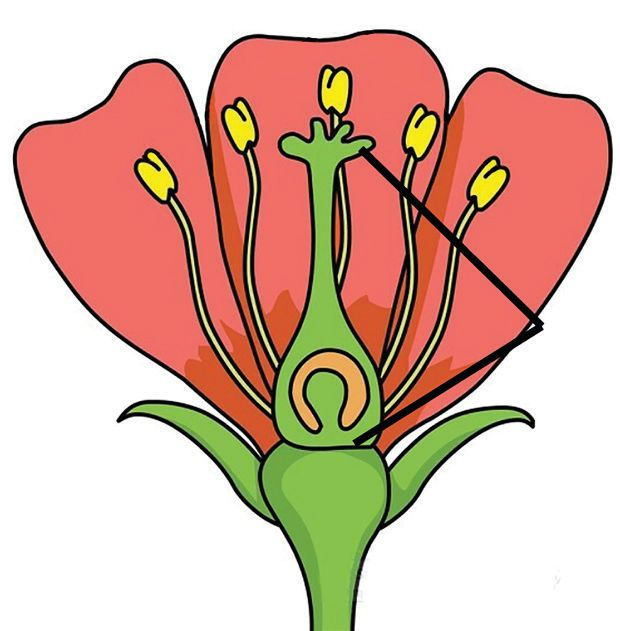
Basic Science u
Fruit is formed from flower.
u u
Fruit and Seed From the illustration,you have understood that the fruit is formed from the flower and a new plant arise from the seed within the fruit. How does a flower produce fruit and seed? Fruits and seeds are produced from flowers through reproduction. Which are the reproductive parts of a flower? List them using the information learned so far. Male reproductive organ
: ………………………………………………..
Female reproductive organ : ……………………………………………….. Look at the pictures below and understand the parts of a stamen and carpel. Stigma Style
Anther Stamen
Carpel
Ovary Ovule
Filament
Stamen
Carpel
Observe the androecium and gynoecium of a shoe flower using hand lens/ microscope. Androecium: Androecium is composed of stamens. Stamens have parts called filament and anther. Pollen grains are present in the anther chambers. Pollen grains contain male gametes. Gynoecium: Gynoecium is the female reproductive part of a flower. The carpel consists of stigma, style and ovary. The egg or female gamete is found within the ovule in the ovary.
64
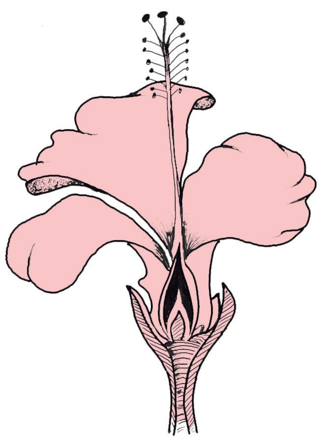
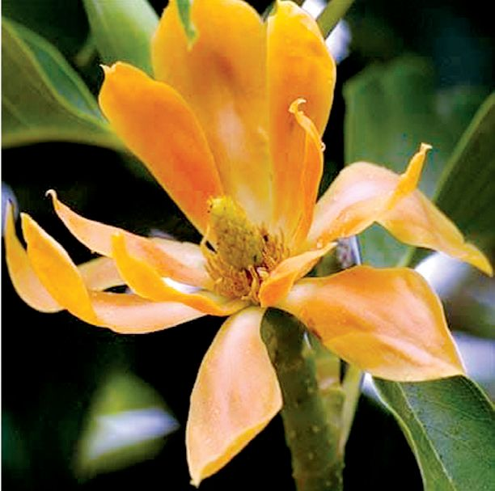
Class VI u
Which are the parts of a stamen?
u
Where are pollen grains found?
u
Which are the parts of the carpel?
u
Where is female gamete seen?
You have identified the parts of gynoecium and androecium. Given below is a picture showing the longitudinal section of a shoe flower. Label the parts on it. ..................................... .....................................
..................................... ..................................... ..................................... ..................................... .....................................
L S of Shoe Flower
Draw the L.S of Shoe flower in the Science Diary and label the parts.
Ovaries
Can a flower have more than one ovary? What is your guess? Examples of flowers having multiple ovaries in a single flower are - champak, lotus, custard apple and Polyalthia.
Male and Female Flowers Are there male and female flowers?
Champak flower
Let’s do an activity in groups to find out whether androecium and gynoecium are found within the same flower in all the flowers you have observed. Materials required: Flowers of lady’s finger and pumpkin, hand lens Observe the flowers of lady’s finger and the pumpkin. Find their androecium and gynoecium. Are androecium and gynoecium found in the same flower in both of these? How do the two flowers differ in this regard?
65

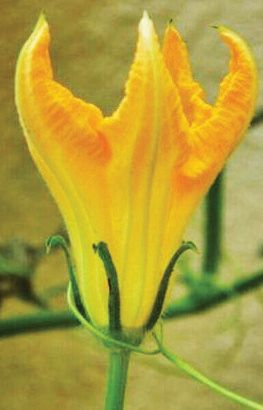

Basic Science
Lady’s Finger flower
Pumpkin flowers
List your findings. Flower
Observations
Lady’s finger
Androecium and gynoecium are found in the same flower.
Pumpkin Analyze the table. In some flowers, androecium and gynoecium are found in the same flower. But there are plants in which androecium and gynoecium are seen in separate flowers. Haven't you understood this from the table? Male flowers are flowers with androecium only. So, what is a female flower? Discuss. Can male and female flowers be called unisexual flowers? Are the flowers of pumpkin unisexual? Discuss and write in the Science Diary. You have found that in a lady's finger flower the androecium and gynoecium are both present in the same flower. Is the lady’s finger flower unisexual or bisexual? Why? Discuss and record the assumptions in the Science Diary.
Unisexual and Bisexual Flowers Flowers which possess either androecium or gynoecium are unisexual flowers. Bisexual flowers have both androecium and gynoecium in the same flower.
66

Class VI
Observe the flowers around you and find out the unisexual and bisexual flowers Write your findings in your Science Diary. Present in the class Unisexual Flowers
Bisexual Flowers
Bitter gourd
Shoe flower
Discuss which type of flowers are more among the ones you have observedunisexual or bisexual?
Male and Female in plants too! Are there plants with only male flowers and plants with only female flowers? Discuss. There are plants with only male flowers and plants with only female flowers around us. Plants with only male flowers are called male plants and plants with female flowers only are called female plants.
Dioecious and Monoecious Plants If the male flowers and female flowers are found in different plants, such plants are called dioecious plants. Examples of dioecious plants are date palm, malabar tamarind, nutmeg and papaya. Monoecious plants have both male and female flowers in the same plant. Cucumber, pumpkin, ash gourd, snake gourd, coconut etc. are monoecious plants. Find and write more examples of dioecious and monoecious plants. You have discussed about the reproductive organs in flowers and their functions. Shouldn’t the male gamete and the egg fuse for the flower to produce a seed? How is this possible? You know that the male gamete is found in the anther and the egg, in the ovary. Don’t the pollen grains need to reach the stigma of the gynoecium for the male gamete and the egg to fuse? How does this happen?
67
Stigma
Pollen grain Anther
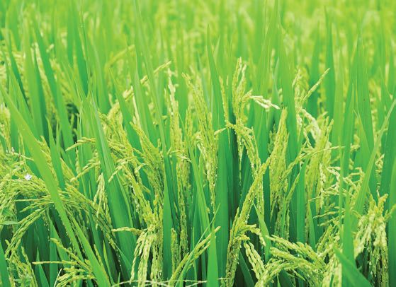


Basic Science
Pollination Transfer of pollen grains from the anther to the stigma is pollination.
Friends of Flowers Observe the given pictures.
What are the reasons for insects and birds getting attracted to flowers? Write down your guess. How do flowers benefit when they collect honey from the flowers? Do they help to pollinate flowers? Discuss. What factors help in pollination? You know that insects and birds help in the process of pollination. These are pollinators. Are insects and birds the only pollinators? Besides living beings, which are the other pollinators? Observe the pictures below and identify the pollinators. For us, pollination takes place with the help of wind.It is possible because we have lots of lightweight pollen grains.
We require water for pollination
Black pepper………….......…….
Rice………….......…….
68
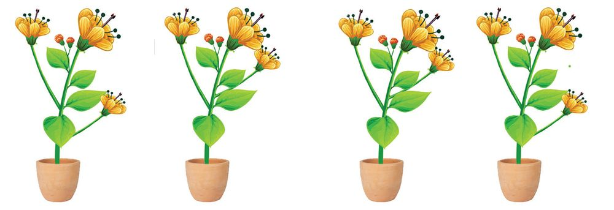
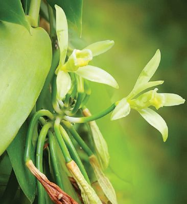

Class VI
Do plants pollinated in this way require factors such as colour, nectar, and fragrance to attract pollinators? Record your assumptions in the Science Diary. Which are the pollinators you have come to know about so far? u
Insects
u u u
Formulate a definition for pollinators.
Self pollination and Cross pollination Observe the figures and understand the different methods by which pollination is made possible..
Figure 1
For Further Reading
Vanilla Va n i l l a is a spice cultivated in our country. It is a plant native to South America. Vanilla is pollinated by a type of bee. But since this bee is not seen in our place, the farmers produce seeds by artificially pollinating the flowers.
Figure 2
Figure 3
In the first figure, aren’t the pollen grains of a flower falling on the stigma of the same flower? What happens in the second figure? What about the third figure? Discuss and write. Figure 1 : Pollen grains transfer to the same flower. Figure 2 : ………………………………………………….. Figure 3 : ……………………………………………………..
69

Basic Science
Self-Pollination and Cross-Pollination Transfer of pollen grains to the stigma of the same flower or the stigma of another flower of the same plant is self pollination. Cross Pollination is the transfer of pollen grains from one flower to the stigma of a flower of another plant of the same species. In the figures you have observed in which flowers does self pollination take place? In which flower does cross pollination take place? Find and write. Analyse the given statements regarding pollination. Put () mark against the correct one. In dioecious plants, only cross pollination takes place.
¨
In monoecious plants, only cross pollination takes place
¨
Both self pollination and cross pollination take place in bisexual flowers. ¨
For Further Reading
Nature Which Encourages Cross-Pollination Nature itself prevents self pollination and encourages cross pollination to produce better and more diverse varieties of plants. In the flowers of some plants the male and female reproductive organs mature at different times. For example, in sunflower, the development of the gynoecium is completed only after the stamen has reached full maturity. In Avocado, the development of gynoecium and stamen are completed at different times. Stamens and gynoecium are situated in opposite directions to prevent self pollination in Gloriossa.
After Pollination What happens to pollen grains after pollination? Write the processes that take place after pollination by analysing the given note. Make use of the discussion points also.
70


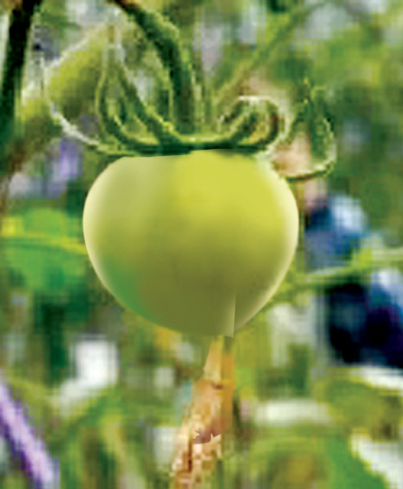
Class VI Pollen grain
Fertilisation
Pollen tube
After pollination, the pollen grain grows down through style towards the ovary in the form of a tube. Male gamete reaches the ovary through this tube and fuses with the egg.The process of fusion of male gamete and egg to form zygote is called fertilisation.
Ovary
Discussion Points u
What happens to the pollen grain after pollination?
u
How does the male gamete reach the ovary?
u
What is fertilisation?
u
By which name is the fertilised egg known?
After Fertilisation
The picture shows the changes in the tomato flower after fertilisation. Analyse the pictures and find out the changes that occur to the parts mentioned below. Discuss and write.
71
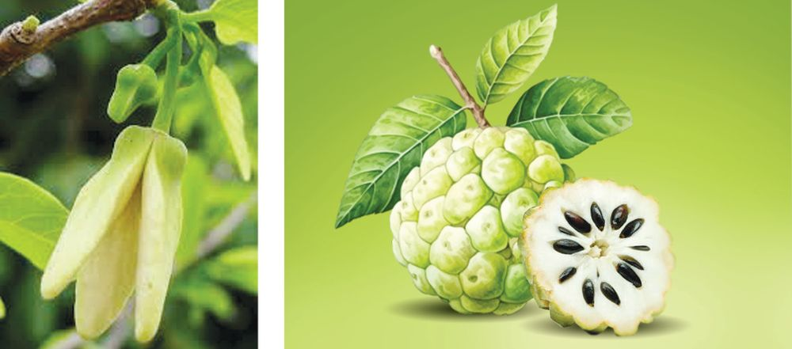

Basic Science u
Petals - Wither off
u
Ovary
- .........…………….
u
Sepals - .........…………….
u
Androecium - .........…………….
u
Pedicel - .........…………….
Do the same changes occur in all flowers you have observed. After fertilisation, the zygote becomes the embryo, the ovule becomes the seed, and the ovary becomes the fruit.
Fruits It is understood that the ovary develops into fruit after fertilisation. Is there any relation between the number of ovaries and the number of fruits? Observe the picture. A bitter gourd flower has only one ovary. So how many fruits are formed from it? Observe the picture and find out.
Bitter gourd flower
Like bitter gourd’s flower, the flowers of mango, lady’s finger, pea, papaya etc. also have only one ovary. A simple fruit is a fruit that is formed from a single flower. Can you find more examples of simple fruits? If a flower has more than one ovary, can it produce more than one fruit? There is more than one ovary in the custard apple flower.
Custard apple flower
Custard apple
Haven’t you realized that if a flower has more than one ovary, it will produce more than one fruit? A fruit that develops from a single flower with multiple ovaries is called an aggregate fruit. Custard apple is an aggregate fruit. Find more examples for aggregate fruits and write them in your Science Diary.
72
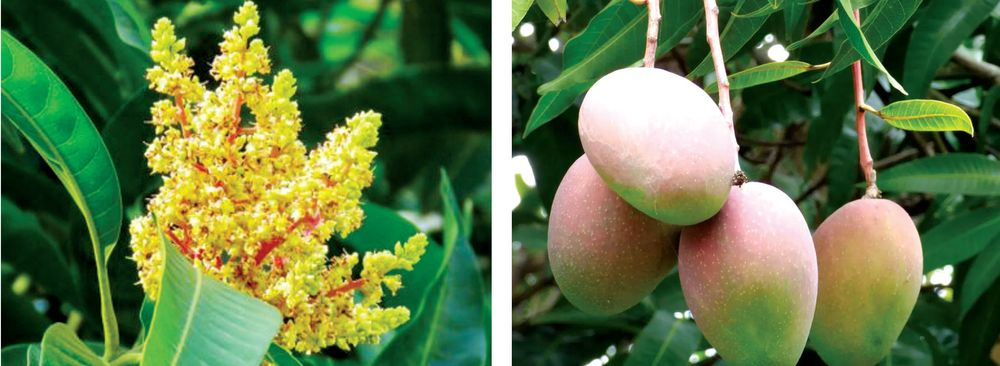
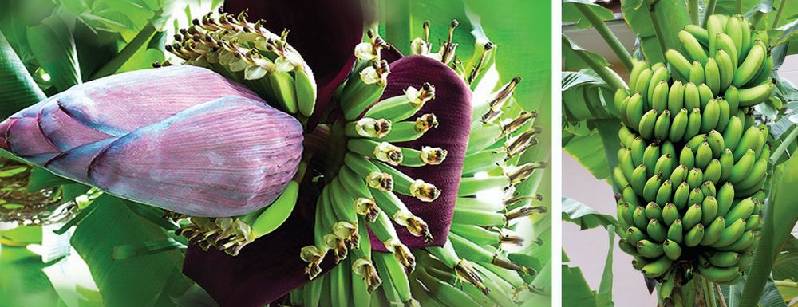


Class VI For Further Reading
Seedless Fruits
In some cases, the ovary develops into fruit without fertilisation. Such fruits do not have seeds. This phenomenon is known as Parthenocarpy. Pineapple Banana Seedless fruits may occur naturally. They are also made artificially. Banana and pineapple are natural seedless fruits. We have artificially developed seedless varieties of grapes, tomatoes and watermelons.
Inflorescence Have you observed fruiting of inflorescences?
Inflorescence in mango tree
Inflorescence in banana plant
73
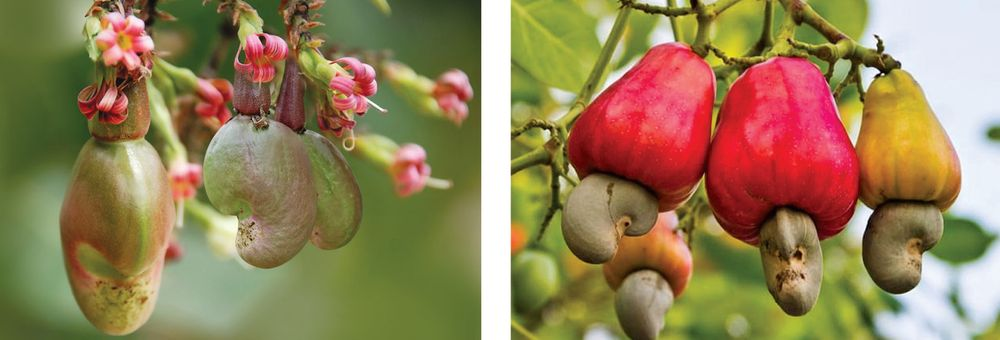

Basic Science
Inflorescence of jackfruit tree
Have you noticed that each flower of the inflorescence in mango tree turns into a mango? In the inflorescence in banana plant also, each flower becomes a fruit. But does this happen in the inflorescence of jackfruit tree? Discuss your finding. The fruits formed from the inflorescences of mango tree and banana plant are seen as separate fruits. But fruits formed from the inflorescence of jackfruit tree combine to form a single fruit. Fruits formed from an inflorescence are combined together to a single fruit. Such fruits are called multiple fruits. Pineapple, wild jackfruit and breadfruit are multiple fruits.
Pseudo Fruits Do all the fruits that we see develop from ovaries? How about a cashew fruit? Observe the pictures.
Which part of cashew looks like a fruit? How is cashew different from other fruits? Discuss.
74
Class VI
In normal flowers, the ovary develops into fruit. Sometimes, parts of the flower other than the ovary also become fruit. These are pseudo fruits. In cashew the pedicle develops into fruits. Find more examples for pseudo fruits. Haven’t you eaten apple and saberjelly? These are also pseudo fruits. Their thalamus grows and become fruits. Don’t you understand why they are called pseudo-fruits? Classify and tabulate the following fruits and present them in the class. Mango, Pineapple, Papaya, Custard apple, Cashew apple, Strawberry, Guava, Rose apple, Polyalthia fruit, Apple, Breadfruit. Simple fruit
Aggregate fruit
Multiple fruit
Pseudo fruit
Mango
Expand the list by finding more examples of each.
Floriculture How to flower benefit us? Are they useful only in pleasing our eyes? Complete the word sun given below. Discuss the uses of flowers, make notes and present it in the class.
Medicine
...................................
...................................
Flowers
....................................
Food
...................................
75
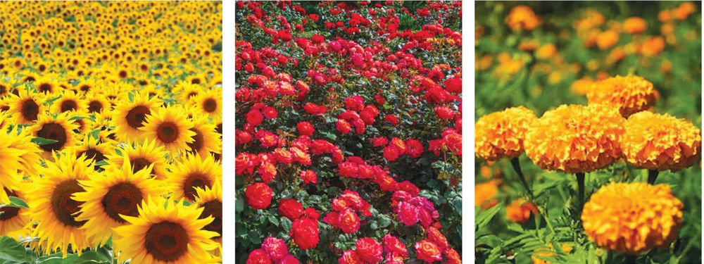
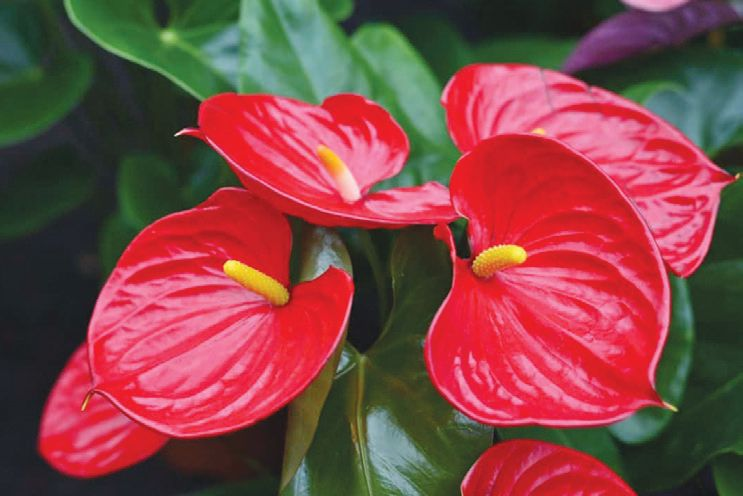

Basic Science
Check your school’s biodiversity garden for flowering plants with different uses. If there are no such plants, do enrich the garden by including them. Isn’t it profitable to grow flowers commercially?
Have you visited places where flowers are cultivated? How beautiful is it to see the gardens with different coloured flowers!
Floriculture Flower farming or floriculture is the process of developing, growing and nurturing flowering and ornamental plants commercially. What are the benefits of farming flowers? Discuss. Which are the commercially grown flowering plants? u
Rose
u u
For Further Reading
Anthurium
Anthurium is an important plant in floriculture. The most attractive part of it is the modified leaves. Such coloured parts found near the flower are called Bracts. The function of bracts is to attract pollinators. Attractive bracts are also seen in the banana and bougainvillea plants.
76
Class VI
Haven’t you understood that flowers are not merely wonderful sights which refresh our eyes, but they also have many other benefits as well? Now, you have learned that the main function of flowers is to produce seeds and maintain the generation of plants. Let us conserve plants and flowers.
Let’s Assess 1.
Compare the flowers and fruits of mango, banana and jackfruit plants and write the differences.
2.
Which of the following statements regarding coconut is NOT true?
3.
a)
It is a monoecious plant.
b)
Coconut has separate male and female flowers.
c)
Coconuts are produced from female flowers.
d)
Androecium and gynoecium are present in the same flower.
Draw and match the correct ones.
Aggregate fruit
Single fruit formed from single flower
Multiple fruit
More than one fruit formed from a single flower
Simple fruit
More than one fruit formed from an inflorescence. These fruits combine to be a single fruit
Extended Activities 1.
Collect different kinds of flowers from your surroundings and prepare a flower carpet or organize a flower show in the class.
2.
Flowers can be dried and preserved just like leaves in a herbarium. Select suitable flowers. Press them by keeping it inside a paper or book. Keep the flowers for about two weeks inside the paper. Display it in class.
77